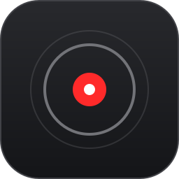

Sampled at 30 Hz33 ms / point
INPUT TRACE y / x
0.0 0.51.0
Between samples, detail disappears.0 points

Laser Pointer 1.1Native Rust and Direct2D. Every mouse sample,
no wasted pixels, zero CPU when idle.
Pay for signing, auto-updates, start with Windows
and to support development. Same open-source code.
Browser demo · outlined stroke bounds are estimates, not GPU timings.
A fast flick is a lot of information.
Keep it, and the curve keeps up with you.
Between samples, detail disappears.0 points
The same gesture. The whole curve.0 points
v1.1 redraws the stroke’s bounds.
Your entire screen gets to sit this one out.
v1.0 → v1.1 · measured GPU figures, not a promise for every machine. Bars share a scale within each row; tiny values have a 2 px minimum.
The bounds aren’t a metaphor.
They’re right here in the code.
Rust. Direct2D. No network connections.
No account between you and your pointer.
/// Conservative bounds avoid tessellating just to decide which pixels need repainting.
pub fn bounds(&self) -> Option<Bounds> {
let radius = self.look.width as f32 * self.scale * layers(self.look.style)[0].0 / 2.0 + 2.0;
self.points.iter().fold(None, |bounds, point| {
union(bounds, Some(Bounds::around(point.x, point.y, radius)))
})
}
pub fn prune(&mut self, now: Instant, scratch: &mut Scratch) {
prune(
&mut self.points,
now,
&self.look,
self.scale,
&mut scratch.radii,
);One shortcut. A precise little reticle.
A trail that makes your point, then disappears.
↗ This is a working preview.
Change the controls. Feel the difference.
Alt+L to toggle · Esc to stop
Try a preset in the live preview above.
App shortcuts shown. In this preview, focus the canvas and press L to toggle.
Right-click for a ripple. In the native app, clicks and scrolling pass through to the app beneath.
Start with Windows is included in the upcoming Store version.
Over any app. On your projector. Across mixed-DPI screens.
Same code. Signed, auto-updates, start with Windows. Your purchase supports development.